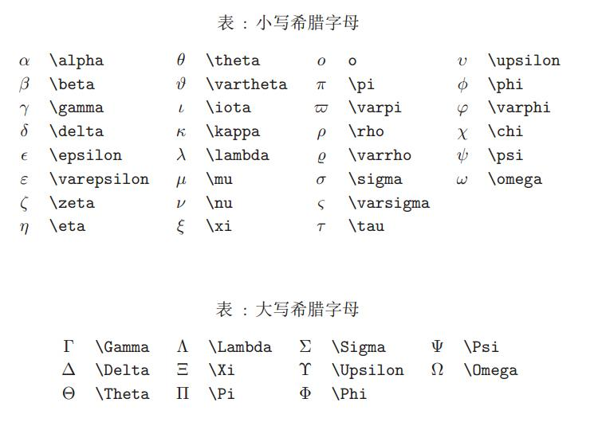

\(Latex\)公式入门¶
芝士什么
KATEX是一个让你的文档看起来更专业的排版系统。而markdown支持下的latex显然是书写数学符号的最佳选择。
Chapter 1.1 数学模式¶
在KATEX数学模式中，能够插入两种不同的公式： - 行间公式：在文本段中显现 - 行内公式：单独作为一行显现
行内公式可以使用$formula$来调用，例如$f(x)=a+b$可得到\(f(x)=a+b\)
行间公式通过两对$$formula$$来调用，例如：
\(\(f(x)=a+b\)\)
而公式中的空格和回车会自动被忽略 例如：调用
f(x) = a + b
却得到
\(f(x) = a + b\)
但是你可以通过\quad来实现插入空格的功能
\(f(x) = \quad a \quad +\quad b\)
或者使用双斜杠来实现换行的功能
$x+y=2 \\ y+z=3$\(x+y=2 \\ y+z=3\)
关于方程组的书写将在下面介绍
Chapter1.2 tag编号¶
在latex中你可以使用\tag{}指令对公式进行编号，例如：
\(\(f(x)=ax^2 +bx+c \tag{1.1}\)\)
值得注意的是，tag{}指令只能在行间公式中使用
Chapter 2.1 数学符号¶
\(LaTex\)中提供了大量的数学符号，所以可以移步 \(Latex\) wiki教科书以获得更加完整的教学。
- 上标 (Powers) 使用
^符号，前后添加大括号可以明确上标和底的内容，例如：$f(x) = e^{-(x-7)+log x}$
\(f(x) = e^{-(x-7)+log x}\)
- 下标（Indices）使用
_符号，前后添加大括号可以明确上标和底的内容，例如：
$a_{n+1} = 7a_n+\frac{1}{a_n}$\(a_{n+1} = 7a_n+\frac{1}{a_n}\)
- 分数 使用
\frac{numerator}{denominator}命令来插入，并且可以嵌套，例如
$\frac{1}{ \frac{1}{a} + \frac{1}{b}}$$\LARGE{\frac{1}{ \frac{1}{a} + \frac{1}{b}}} $
- 根号 使用
\sqrt{}命令插入，同样可以嵌套，例如
$f(x) = \sqrt{x^2} = |x|$\(f(x) = \sqrt{x^2} = |x|\)
- 求和与积分 分别使用
\sum与\int来插入，使用^表示上限，使用_表示下线，例如
$$\sum_{i=1}^{n} i^2$$\[\sum_{i=1}^{n} i^2+2i+1\]
$$\int_{a}^{b} {\sqrt{x^2-1}}$$\[\int_{a}^{b} {\sqrt{x^2-1}}\]
- 上下标记 \overline, \underline 分别在表达式上、下方画出水平线,\overbrace, \underbrace 分别在表达式上、下方给出一个水平的大括号,
-与^指定括号上下标，例如：$$\overline{x+y} \qquad \underline{a+b}$$
\(\overline{x+y} \qquad \underline{a+b}\)
$$\overbrace{1+2+\cdots+n}^{n个} \qquad \underbrace{a+b+\cdots+z}_{26}$$\[\overbrace{1+2+\cdots+n}^{n个} \qquad \underbrace{a+b+\cdots+z}_{26}\]
- 向量 使用
\vec来表示向量，\overrightarrow来表示箭头指向右的向量，\overleftarrow来表示箭头向左的向量，例如：$$\vec{a} + \overrightarrow{AB} + \overleftarrow{DE}$$
\(\vec{a} + \overrightarrow{AB} + \overleftarrow{DE}\)
- 省略号三元点 使用\dots调用，且\ldots点位于基线上，\cdots点设置为居中，\vdots使其垂直，\ddots对角线排列，例如：
$$ x_{1},x_{2},\ldots,x_{5} \quad x_{1} + x_{2} + \cdots + x_{n} $$$ x_{1},x_{2},\ldots,x_{5} \quad x_{1} + x_{2} + \cdots + x_{n} $
下面是他们的对比
\(\ldots \quad \cdots \quad \vdots \quad \ddots\)
Chapter 2.2 矩阵、多行公式¶
Chapter 2.2.1 矩阵¶
KATEX中使用矩阵环境来实现矩阵排列，常用的矩阵环境有\matrix \bmatrix \vmathrix \pmatrix 其区别在于外面的括号不尽相同
| matrix | \(\(\begin{matrix} a & b \\ c & d \end{matrix}\)\) |
| bmatrix | \(\(\begin{bmatrix} a & b \\ c & d \end{bmatrix}\)\) |
| vmatrix | \(\(\begin{vmatrix} a & b \\ c & d \end{vmatrix}\)\) |
| pmatrix | \(\(\begin{pmatrix} a & b \\ c & d \end{pmatrix}\)\) |
其中&用于分隔列，\用于分隔行 ,在begin和end中填入对应的格式说明
下面是一个大型矩阵的例子：
\begin{bmatrix}
c_{0}&c_{n-1}&c_{n-2}&\cdots &c_{1}\\
c_{1}&c_{0}&c_{n-1} & \cdots &c_{2}\\
c_{2}&c_{1}&c_{0}&\cdots &c_3 \\
\vdots &\vdots& \vdots&\ddots &\vdots \\
c_{n-1}&c_{n-2}&c_{n-3}&\dots &c_{0}
\end{bmatrix}
Chapter 2.2.2 多行公式¶
与矩阵类似 KATEX中需要使用cases环境来书写多行公式（如分段函数，多元方程组等），例如：
$$ f(x) = \begin{cases} x^2+x+1 &x<2\ 3 &x=2 \ |x|+7^x &x>2 \end{cases} $$Chapter 3.1特殊符号¶
作为一个成熟的数学写作工具，katex当然包含了所有的数学符号与字母，你可以使用英文或读音召唤他们：
| alpha | \(\alpha\) | Alpha | \(\Alpha\) |
| beta | \(\beta\) | Beta | \(\Beta\) |
| gamma | \(\gamma\) | Gamma | \(\Gamma\) |
| delta | \(\delta\) | Delta | \(\Delta\) |
| epsilon | \(\epsilon\) | Epsilon | \(\Epsilon\) |
| le | \(\le\) | nleq | \(\nleq\) |
| ge | \(\ge\) | ngeq | \(\ngeq\) |
| sim | \(\sim\) | nsim | \(\nsim\) |
| simq | \(\simeq\) | nsimq | \(\not \simeq\) |
下面附上一张表格
